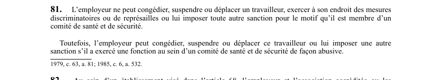

art-81-LSST : protection du membre du comité
Un article du wiki ⚖️ Recueil législatif
En bref
Siéger à un comité de santé et de sécurité ne peut coûter son emploi ni ses conditions de travail : l'article met le membre du comité à l'abri des représailles patronales.
- Gestes interdits à l'employeur : congédier, suspendre, déplacer, exercer des mesures discriminatoires ou de représailles, imposer toute autre sanction.
- Le motif protégé : le fait d'être membre d'un comité de santé et de sécurité.
- La protection porte sur le motif, pas sur la personne : une sanction fondée sur un autre motif reste possible.
- Seule réserve prévue : l'exercice abusif d'une fonction au sein du comité, qui rouvre à l'employeur le droit de sanctionner.
🌐 LegisQuébec · 📄 PDF officiel (page 27)
Texte officiel : capture du PDF
{kind=link}

Toucher l'image pour l'agrandir🔗 Ouvrir a cette page : LSST.pdf : page 27 · texte a jour au 26 mars 2024
Voir aussi
- art. 79 : désaccord au sein du comité · faculté : en cas de désaccord sur les décisions visées aux paragraphes 1° à 4° de l'article 78, les représentants des travailleurs soumettent leurs recommandations par écrit ; si le litige persiste, il peut être soumis à la Commission dont la décision est exécutoire.
- art. 80 : affichage des membres du comité · obligation : l'employeur doit afficher les noms des membres du comité de santé et de sécurité dans autant d'endroits de l'établissement visibles et facilement accessibles aux travailleurs qu'il est raisonnablement nécessaire.
- art. 81.18 : disposition abrogée · disposition-abrogee.
- art. 82 : pluralité de comités par entente · définition : au sein d'un établissement visé à l'article 68, l'employeur et l'association accréditée peuvent s'entendre sur la formation de plusieurs comités de santé et de sécurité ; une copie de l'entente est transmise à la Commission.
- ↑ Loi : LSST
Pages qui pointent ici (5)
- art-79-LSST : désaccord au sein du comité SST Recueil législatif
- art-80-LSST : affichage des membres du comité Recueil législatif
- art-82-LSST : plusieurs comités par entente Recueil législatif
- Avertissement, suspension ou congédiement, ce que ton boss a le droit de faire Droit du travail
- Le comité SST et le représentant à la prévention, à quoi ils servent Droit du travail